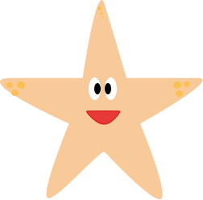

<!DOCTYPE html>
<html lang="en">
<head>
    <meta charset="UTF-8">
    <meta name="viewport" content="width=device-width, initial-scale=1.0">
    <title>peaches univers</title>
</head>
<!--link til css-->
<link rel="stylesheet" href="css/soestjerne.css">

<body>

<!-- Vedste du, at søstjeren kan gendanne en ny arm, hvis den mister en -->
 <!-- Vidste du, at søstjernen, hverken har hjerne eller hjerte -->
    
 <!--hvad mangler jeg 
 - knap der gør man kommer tilbage til forsiden
 - flag oppe i hjørnet
 - boks med info om søstjerner 
 - en søstjerne der mister en arm
 -->


</body>
</html>

<!--link til javascript-->
<script src="js/soestjerne.js"></script>


<!DOCTYPE html>
<html lang="en">
<head>
    <meta charset="UTF-8">
    <meta name="viewport" content="width=device-width, initial-scale=1.0">
    <title>peachs universe</title>

</head>
<body>

    <!-- knap tilbage til forsiden-->
     <a href="index.html" class="tilbage-knap">Tilbage</a>"
      

    <!--overskrift på forsiden-->
    <div class="velkomen til peachs univers">
        <h1>Kig dig lidt omkring</h1>
    </div>

    <!--biled af universet-->
    

    <!--billed af peach-->
    

<!--info om søstjerner ved klik på musling-->
<div id="info-ved-musling" class="info" hidden>
     <button id="luk-info" aria-label="luk info">x</button>>
    <h2>Vidste du?</h2>
    <p> Søstjerner kan danne nye arme, hvis de mister en arm</p>
</div>

</body>
</html>